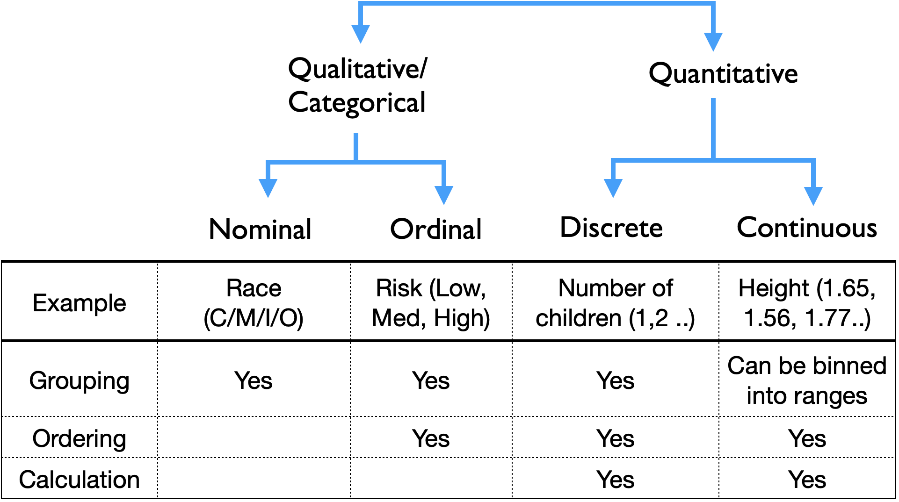
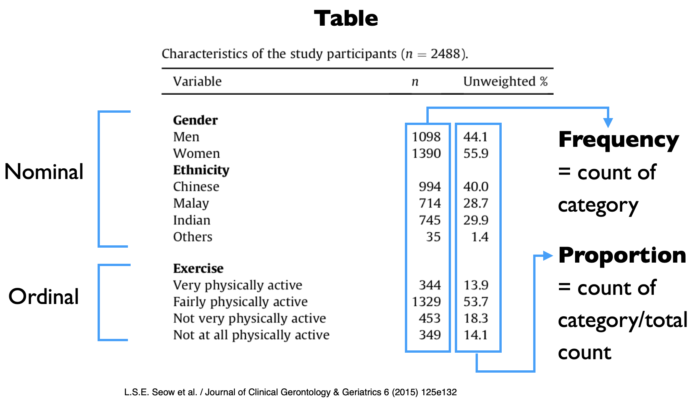
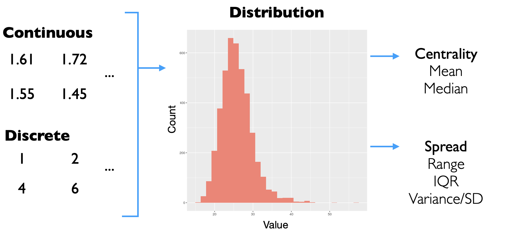
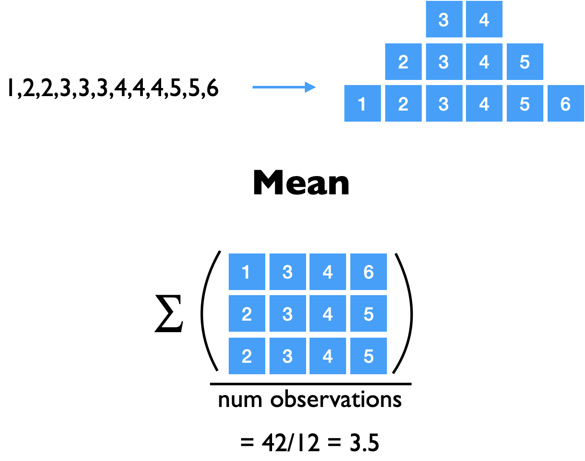
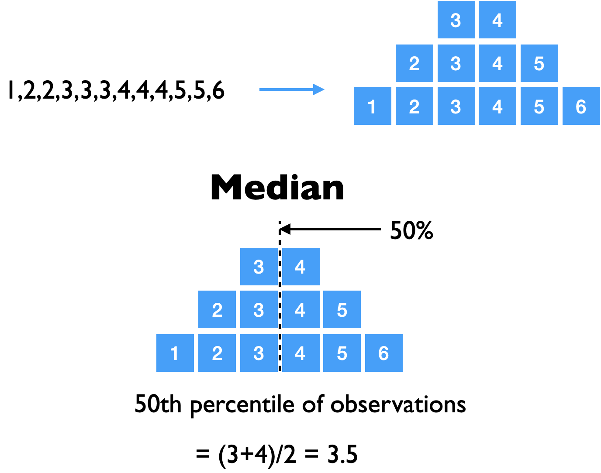
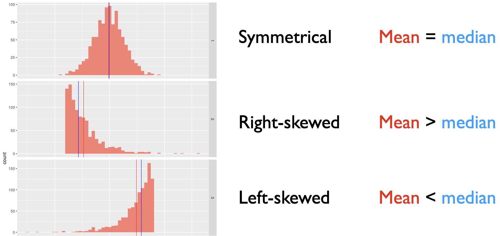
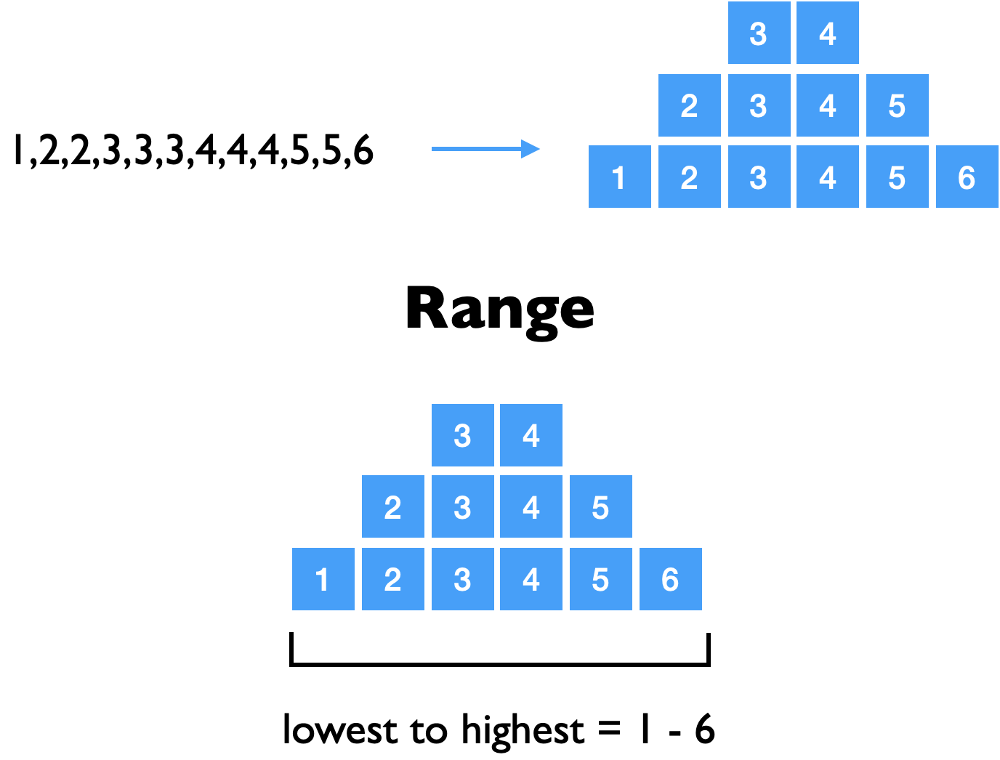
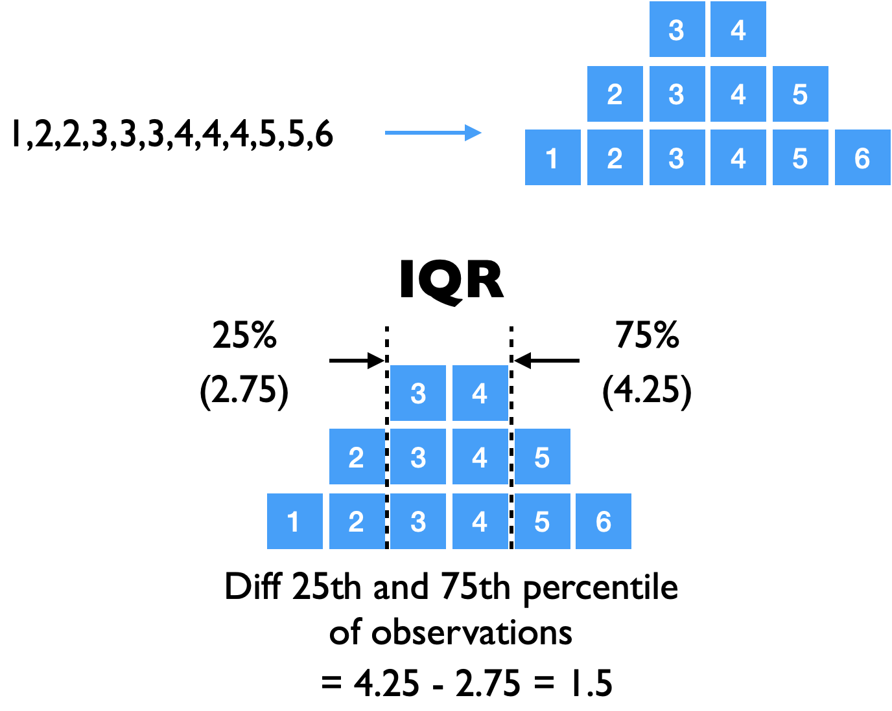
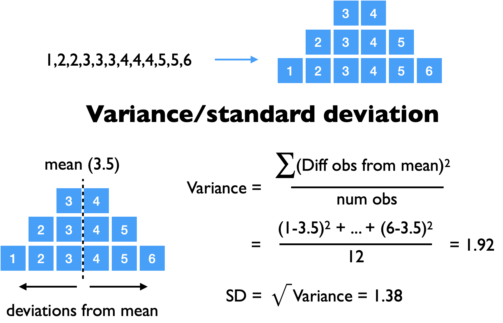

Descriptive statistics#
We will start by looking at how we can describe data using summary statistics
Types of data#

Data can be quantitative or qualitative as summarized in this table, and they can be described in the following ways
qualitativefrequency
proportion
quantitativemeasures of centrality (mean/median)
measures of spread (range/IQR/variance/SD)
Describing qualitative/categorical data#

Categorical data can be summarized as counts of each category as well as their proportions
To illustrate this, we will generate some categorical data and use it to calculate the count and proportions of each category
library(tidyverse)
data_categorical <- tibble(Sex=c("M","F","M","M","F","M"),
Diagnosis=c("DM","DM","HPT","HPT","Asthma","IHD"))
data_categorical <- data_categorical %>%
mutate(Sex = as.factor(Sex),
Diagnosis = as.factor(Diagnosis))
head(data_categorical)
── Attaching core tidyverse packages ───────────────────────────── tidyverse 2.0.0 ──
✔ dplyr 1.1.1 ✔ readr 2.1.4
✔ forcats 1.0.0 ✔ stringr 1.5.0
✔ ggplot2 3.4.2 ✔ tibble 3.2.1
✔ lubridate 1.9.2 ✔ tidyr 1.3.0
✔ purrr 1.0.1
── Conflicts ─────────────────────────────────────────────── tidyverse_conflicts() ──
✖ dplyr::filter() masks stats::filter()
✖ dplyr::lag() masks stats::lag()
ℹ Use the conflicted package (<http://conflicted.r-lib.org/>) to force all conflicts to become errors
| Sex | Diagnosis |
|---|---|
| <fct> | <fct> |
| M | DM |
| F | DM |
| M | HPT |
| M | HPT |
| F | Asthma |
| M | IHD |
We can use the table function to obtain the counts of the different categories for a variable
table(data_categorical$Sex)
F M
2 4
We can calculate the percentage per category by passing the output of table to the prop.table function that returns the fraction per category. We then multiply it by 100 to get the percentage
table(data_categorical$Sex) %>% prop.table * 100
F M
33.33333 66.66667
Describing quantitative data#

Data preparation#
Let us generate some quantitative data with different distributions to illustrate how they can be described with different measures of centrality and spread
Show code cell source
sample1 <- tibble(set=1, n=1:1000, value=rbeta(1000, 100,100)*200+50)
sample2 <- tibble(set=2, n=1:1000, value=rbeta(1000, 1,50)*400+130)
sample3 <- tibble(set=3, n=1:1000, value=rbeta(1000, 50,1)*400-230)
sample4 <- tibble(set=4, n=1:1000, value=rbeta(1000, 0.6,0.6)*50+120)
data <- bind_rows(sample1, sample2, sample3, sample4) %>%
mutate(set = as.factor(set))
Show code cell source
# set plot dimensions
options(repr.plot.width=10, repr.plot.height=15)
data %>%
group_by(set) %>%
ggplot(aes(x=value)) +
geom_histogram(binwidth=1.5, fill="salmon") +
facet_grid(set ~., scale="free_y") + # allow different y-scales
theme_grey(base_size = 16)
Measures of centrality#
There are 2 commonly used measures of centrality
Mean
Median
1. Mean#

We can use the base function mean to calculate the average
values <- c(1,5,2,3,2,6,2)
mean(values)
Let us calculate the means of the different datasets (1-4) and visualize the distributions with their means
Show code cell source
# calculate means of the datasets grouped by the set category
mean_stat <- data %>%
group_by(set) %>%
summarize(mean=mean(value))
mean_stat
| set | mean |
|---|---|
| <fct> | <dbl> |
| 1 | 150.2535 |
| 2 | 137.5898 |
| 3 | 161.9501 |
| 4 | 144.5855 |
Show code cell source
# set plot dimensions
options(repr.plot.width=10, repr.plot.height=15)
# plot histograms grouped by set with their calculated means
data %>%
group_by(set) %>%
ggplot(aes(x=value)) +
geom_histogram(binwidth=1.5, fill="salmon") +
geom_vline(data=mean_stat, aes(xintercept=mean,group=set),color="red") +
facet_grid(set ~., scale="free_y") + # allow different y-scales
theme_grey(base_size = 16)

2. Median#

The median is the middle (50% percentile) value when the values are sorted
We can use the quantile function to calculate the 50% percentile (middle) value
quantile(data, percentile)
values <- c(1,5,2,3,2,6,2)
# calculate 50% (0.5) percentile
quantile(values, 0.5)
The is equivalent to the median function (50% percentile)
median(values)
Let us calculate the medians of the different datasets (1-4) and visualize the distributions with their medians
Show code cell source
median_stat <- data %>%
group_by(set) %>%
summarize(median=median(value))
median_stat
| set | median |
|---|---|
| <fct> | <dbl> |
| 1 | 150.2816 |
| 2 | 135.2596 |
| 3 | 164.1277 |
| 4 | 143.6050 |
Show code cell source
# set plot dimensions
options(repr.plot.width=10, repr.plot.height=15)
# plot histograms grouped by set with their calculated medians
data %>%
group_by(set) %>%
ggplot(aes(x=value)) +
geom_histogram(binwidth=1.5, fill="salmon") +
geom_vline(data=median_stat, aes(xintercept=median,group=set),color="blue") +
facet_grid(set ~., scale="free_y") + # allow different y-scales
theme_grey(base_size = 16)
Comparing mean and median with different distributions#
Given the both mean and median are both measures of centrality, let us examine how they differ with different distributions
We calculate the
mean,medianand theirdifferenceby the groupsetWe plot the histograms grouped by
setwith their means and medians
Show code cell source
summary_stat <- data %>%
group_by(set) %>%
summarize(mean=mean(value),
median=median(value),
diff=mean-median)
summary_stat
| set | mean | median | diff |
|---|---|---|---|
| <fct> | <dbl> | <dbl> | <dbl> |
| 1 | 150.2535 | 150.2816 | -0.02808606 |
| 2 | 137.5898 | 135.2596 | 2.33023275 |
| 3 | 161.9501 | 164.1277 | -2.17757549 |
| 4 | 144.5855 | 143.6050 | 0.98055877 |
Show code cell source
# set plot dimensions
options(repr.plot.width=10, repr.plot.height=15)
# plot histograms grouped by set with their calculated means and medians
data %>%
group_by(set) %>%
ggplot(aes(x=value)) +
geom_histogram(binwidth=1.5, fill="salmon") +
geom_vline(data=summary_stat, aes(xintercept=mean,group=set),color="red") +
geom_vline(data=summary_stat, aes(xintercept=median,group=set), color="blue") +
facet_grid(set ~., scale="free_y") + # allow different y-scales
theme_grey(base_size = 16)
Notice that mean is affected by the skew in the data. For skewed data, the median may be a better measure as it is less affected by extreme values

Measures of variability#
There are 3 common measures of variability or spread of data
Range
Interquantile range (IQR)
Variance and standard Deviation (SD)
1. Range#
The range is the simplest, which is the minimum and maximum values in the dataset

We can use the range function to get both the minimum and maximum values as a vector
values <- c(1,5,2,3,2,6,2)
# find the range of values
range(values)
- 1
- 6
Let us examine minimum and maximum values of the different datasets (1-4) grouped by set
Show code cell source
# minimum and maximum values of datasets grouped by set
range_stat <- data %>%
group_by(set) %>%
summarize(min=min(value),
max=max(value))
range_stat
| set | min | max |
|---|---|---|
| <fct> | <dbl> | <dbl> |
| 1 | 127.8142 | 174.6591 |
| 2 | 130.0030 | 182.4219 |
| 3 | 125.8187 | 169.9939 |
| 4 | 120.0009 | 169.9946 |
Show code cell source
# set plot dimensions
options(repr.plot.width=10, repr.plot.height=15)
# plot histograms grouped by set with their minimum and maximum values
data %>%
group_by(set) %>%
ggplot(aes(x=value)) +
geom_histogram(binwidth=1.5, fill="salmon") +
geom_vline(data=range_stat, aes(xintercept=min,group=set),color="red") +
geom_vline(data=range_stat, aes(xintercept=max,group=set), color="red") +
facet_grid(set ~., scale="free_y") + # allow different y-scales
theme_grey(base_size = 16)
2. Interquantile range (IQR)#
The interquartile range is the difference between the 25th and 75th percentiles

We can use the IQR function to find the interquantile range
values <- c(1,5,2,3,2,6,2,6,2,7)
IQR(values)
We can examine the 25th/75th percentile and IQR values for the different distributions grouped by set and visualize the distributions with their percentiles
Show code cell source
# Interquantile ranges for distributions grouped by set
IQR_stat <- data %>%
group_by(set) %>%
summarize(percent_25 = quantile(value,0.25),
percent_75 = quantile(value,0.75),
IQR = IQR(value)
)
IQR_stat
| set | percent_25 | percent_75 | IQR |
|---|---|---|---|
| <fct> | <dbl> | <dbl> | <dbl> |
| 1 | 145.4497 | 154.9905 | 9.540851 |
| 2 | 132.1658 | 140.2833 | 8.117465 |
| 3 | 158.5120 | 167.4933 | 8.981320 |
| 4 | 129.0945 | 159.9863 | 30.891842 |
Show code cell source
# set plot dimensions
options(repr.plot.width=10, repr.plot.height=15)
# histograms grouped by set with 25th and 75th percentile values
data %>%
group_by(set) %>%
ggplot(aes(x=value)) +
geom_histogram(binwidth=1.5, fill="salmon") +
geom_vline(data=IQR_stat, aes(xintercept=percent_25,group=set),color="red") +
geom_vline(data=IQR_stat, aes(xintercept=percent_75,group=set), color="red") +
facet_grid(set ~., scale="free_y") + # allow different y-scales
theme_grey(base_size = 16)
3. Variance and standard deviation#
The variance and standard deviation are the most commonly used measures of variability and spread of data
Varianceis defined as the sum of squared differences between the observed values and the mean, divided by the number of valuesStandard deviationis the square root of the variance

To illustrate how the variance is calculated, we first calculate the sum of squared differences with the following steps
calculate the
meanof valuessubtract the
meanfrom each value to get the differencessquare the differences and sum them
values <- c(1,5,2,3,2,6,2,6,2,7)
mean <- mean(values) # mean of values
diff_mean <- values-mean # difference between each value and the mean
squares <- diff_mean^2 # squared differences
sum_squares <- sum(squares) # sum of squared differences
mean
diff_mean
squares
sum_squares
- -2.6
- 1.4
- -1.6
- -0.6
- -1.6
- 2.4
- -1.6
- 2.4
- -1.6
- 3.4
- 6.76
- 1.96
- 2.56
- 0.36
- 2.56
- 5.76
- 2.56
- 5.76
- 2.56
- 11.56
To calculate the variance, we divide the sum of squared differences by the number of values. To calculate the standard deviation, we get the square root of the variance
variance <- sum_squares/length(values)
standard_dev <- sqrt(variance)
variance
standard_dev
We can use the var function for calculating the variance, and the sd function for calculating the standard deviation
var(values)
sd(values)
Wait a minute, why are the values different from what we calculated manually?
This is because the
varfunction calculates it by dividing the sum of squares by the number of values - 1.We’ll examine why this correction (-1) is used later
If we repeat the manual calculation with the correction, we will obtain the same values as var and sd functions
variance <- sum_squares/(length(values)-1) # correction n-1
standard_dev <- sqrt(variance)
variance
standard_dev
We can examine the variance and standard deviation values for the different distributions grouped by set and visualize the distributions with the standard deviation
Show code cell source
# mean, variance and standard deviation grouped by set
var_stat <- data %>%
group_by(set) %>%
summarize(mean=mean(value),
var=var(value),
sd=sd(value))
var_stat
| set | mean | var | sd |
|---|---|---|---|
| <fct> | <dbl> | <dbl> | <dbl> |
| 1 | 150.2535 | 52.67530 | 7.257775 |
| 2 | 137.5898 | 60.49975 | 7.778159 |
| 3 | 161.9501 | 56.81672 | 7.537687 |
| 4 | 144.5855 | 273.37723 | 16.534123 |
Show code cell source
# set plot dimensions
options(repr.plot.width=10, repr.plot.height=15)
# histogram plots grouped by set with their mean and sd
df_text <- data.frame(set=c(1,2,3,4),
x=c(150,150,150,150),
y=c(30,30,30,30),
sd=round(var_stat$sd,digits=1))
data %>%
group_by(set) %>%
ggplot(aes(x=value)) +
geom_histogram(binwidth=1.5, fill="salmon") +
geom_vline(data=var_stat, aes(xintercept=mean, group=set), color="red") +
geom_text(data=df_text,aes(x=x,y=y,label=sd,group=set), size=10) +
facet_grid(set ~., scale="free_y") + # allow different y-scales
theme_grey(base_size = 16)
Warning message:
“Combining variables of class <factor> and <numeric> was deprecated in ggplot2 3.4.0.
ℹ Please ensure your variables are compatible before plotting (location:
`combine_vars()`)”
Warning message:
“Combining variables of class <numeric> and <factor> was deprecated in ggplot2 3.4.0.
ℹ Please ensure your variables are compatible before plotting (location:
`combine_vars()`)”
Describing data using gtsummary package#
We will use the gtsummary package, which is versatile library that can produce tables of summary statistics to describe the data. More details about the package can be found here: https://www.danieldsjoberg.com/gtsummary/

To demonstrate how categorical and quantitative data can be summarized with gtsummary, we’ll look at a dataset of 200 patients at an ICU unit: https://vincentarelbundock.github.io/Rdatasets/doc/Stat2Data/ICU.html
The following categorical data were collected:
Age group: (<50, 50-69, >=70)Sex: (Male/Female)Survive: (Yes/No)Infection: (Suspected/No)Emergency Admission: (Yes/No)
The following quantitative variables were collected:
AgeSystolic BPPulse Rate
library(tidyverse)
data_icu <- read_csv("https://raw.githubusercontent.com/kennethban/dataset/main/icu.csv")
data_icu <- data_icu %>%
mutate("...1" = NULL,
ID = NULL,
Survive=as.factor(Survive),
Sex=as.factor(Sex),
Infection=as.factor(Infection),
Emergency=as.factor(Emergency),
AgeGroup=as.factor(AgeGroup))
head(data_icu)
New names:
• `` -> `...1`
Rows: 200 Columns: 10
── Column specification ─────────────────────────────────────────────────────────────
Delimiter: ","
dbl (10): ...1, ID, Survive, Age, AgeGroup, Sex, Infection, SysBP, Pulse, Em...
ℹ Use `spec()` to retrieve the full column specification for this data.
ℹ Specify the column types or set `show_col_types = FALSE` to quiet this message.
| Survive | Age | AgeGroup | Sex | Infection | SysBP | Pulse | Emergency |
|---|---|---|---|---|---|---|---|
| <fct> | <dbl> | <fct> | <fct> | <fct> | <dbl> | <dbl> | <fct> |
| 0 | 87 | 3 | 1 | 1 | 80 | 96 | 1 |
| 1 | 27 | 1 | 1 | 1 | 142 | 88 | 1 |
| 1 | 59 | 2 | 0 | 0 | 112 | 80 | 1 |
| 1 | 77 | 3 | 0 | 0 | 100 | 70 | 0 |
| 0 | 76 | 3 | 1 | 1 | 128 | 90 | 1 |
| 1 | 54 | 2 | 0 | 1 | 142 | 103 | 1 |
We will use the tbl_summary function from the gtsummary library. This function is highly versatile and can generate summary tables for categorical and quantitative data
By default:
categoricalvariables are summarized by the count and proportion (in percentages)quantitativevariables are summarized by the median and percentiles (25%, 75%)
The tbl_summary function produces a table in HTML format. We will define a convenience function print_html to display the output in the notebook
Show code cell source
# Local function to print HTML output for display within the notebook
print_html <- function(input) {
capture.output(input) %>%
paste(collapse="") %>%
IRdisplay::display_html()
}
Let us first look at how we can summarize the categorical variables in the ICU dataset.
We select the columns with categorical data and pass it to
tbl_summaryWe pass the output from
tbl_summarytoprint_htmlto display the table
library(gtsummary)
# summarize categorical variables AgeGroup, Sex, Infection, Emergency, Survive
data_icu %>%
select(AgeGroup, Sex, Infection, Emergency, Survive) %>% # select columns that are categorical (factors)
tbl_summary %>%
print_html
| Characteristic | N = 2001 |
|---|---|
| AgeGroup | |
| 1 | 59 (30%) |
| 2 | 77 (38%) |
| 3 | 64 (32%) |
| Sex | |
| 0 | 124 (62%) |
| 1 | 76 (38%) |
| Infection | |
| 0 | 116 (58%) |
| 1 | 84 (42%) |
| Emergency | |
| 0 | 53 (26%) |
| 1 | 147 (74%) |
| Survive | |
| 0 | 40 (20%) |
| 1 | 160 (80%) |
| 1 n (%) | |
Next, let us summarize the quantitative variables
We select the columns with quantitative data and pass it to
tbl_summaryWe pass the output from
tbl_summarytoprint_htmlto display the table
# summarize quantitative variables Age, SysBP, Pulse
data_icu %>%
select(Age, SysBP, Pulse) %>% # select only columns that are quantitative
tbl_summary %>%
print_html
| Characteristic | N = 2001 |
|---|---|
| Age | 63 (47, 72) |
| SysBP | 130 (110, 150) |
| Pulse | 96 (80, 118) |
| 1 Median (IQR) | |
The default summary statistics for quantitative variables are
median(50th percentile)25/75th percentiles
We can override the default statistics by specifying the statistic option
tbl_summary(statistic = variables ~ "summary statistics")
Variables can be specified manually as a vector e.g.
c("Age", "SysBP", "Pulse")or by using a helper functionall_continuous()Summary statistics are specified by enclosing the statistical function (e.g.
mean,sd,IQR) within curly braces{}as placeholders in the text
Here, we will specify that continuous variables will be mean and sd
# summarize Age, SysBP, Pulse using mean and sd
data_icu %>%
select(Age, SysBP, Pulse) %>%
tbl_summary(statistic = all_continuous() ~ "{mean} ({sd})") %>%
print_html
| Characteristic | N = 2001 |
|---|---|
| Age | 58 (20) |
| SysBP | 132 (33) |
| Pulse | 99 (27) |
| 1 Mean (SD) | |
If we do not select the type of variables (i.e. categorical or quantitative), tbl_summary will create a table that summarizes both
# default summary of both categorical and quantitative variables
data_icu %>%
tbl_summary() %>%
print_html
| Characteristic | N = 2001 |
|---|---|
| Survive | |
| 0 | 40 (20%) |
| 1 | 160 (80%) |
| Age | 63 (47, 72) |
| AgeGroup | |
| 1 | 59 (30%) |
| 2 | 77 (38%) |
| 3 | 64 (32%) |
| Sex | |
| 0 | 124 (62%) |
| 1 | 76 (38%) |
| Infection | |
| 0 | 116 (58%) |
| 1 | 84 (42%) |
| SysBP | 130 (110, 150) |
| Pulse | 96 (80, 118) |
| Emergency | |
| 0 | 53 (26%) |
| 1 | 147 (74%) |
| 1 n (%); Median (IQR) | |
Finally, we can compare the summary statistics grouped by a categorical variable of interest, by specifying the by option in tbl_summary
by = categorical variable
As an example, we will compare the summary statistics of the dataset grouped by the Survive categorical variable
# summarize dataset grouped by Survive category
data_icu %>%
tbl_summary(by = Survive) %>%
print_html
| Characteristic | 0, N = 401 | 1, N = 1601 |
|---|---|---|
| Age | 68 (56, 75) | 61 (42, 71) |
| AgeGroup | ||
| 1 | 5 (12%) | 54 (34%) |
| 2 | 17 (42%) | 60 (38%) |
| 3 | 18 (45%) | 46 (29%) |
| Sex | ||
| 0 | 24 (60%) | 100 (62%) |
| 1 | 16 (40%) | 60 (38%) |
| Infection | ||
| 0 | 16 (40%) | 100 (62%) |
| 1 | 24 (60%) | 60 (38%) |
| SysBP | 126 (89, 140) | 132 (112, 154) |
| Pulse | 96 (81, 120) | 95 (80, 116) |
| Emergency | ||
| 0 | 2 (5.0%) | 51 (32%) |
| 1 | 38 (95%) | 109 (68%) |
| 1 Median (IQR); n (%) | ||
Exercise - Descriptive Stats#
For this exercise, we will use the Framingham heart dataset
library(tidyverse)
# load data
data <- read_csv("https://raw.githubusercontent.com/kennethban/dataset/main/framingham.csv")
# recap of what was done
data <- data %>%
rename(sex = male) %>%
mutate(sex = as.factor(sex),
age = as.integer(age),
education = as.factor(education),
currentSmoker = as.factor(currentSmoker),
cigsPerDay = as.integer(cigsPerDay),
BPMeds = as.factor(BPMeds),
prevalentStroke = as.factor(prevalentStroke),
prevalentHyp = as.factor(prevalentHyp),
diabetes = as.factor(diabetes),
totChol = as.integer(totChol),
heartRate = as.integer(heartRate),
TenYearCHD = as.factor(TenYearCHD)
)
data <- data %>%
mutate(glucose = round(glucose/18, digits=1)) %>% # mg/dL to mmol/L
mutate(totChol = round(totChol/39, digits=1)) # mg/dL to mmol/L
head(data)
Rows: 4240 Columns: 16
── Column specification ─────────────────────────────────────────────────────────────
Delimiter: ","
dbl (16): male, age, education, currentSmoker, cigsPerDay, BPMeds, prevalent...
ℹ Use `spec()` to retrieve the full column specification for this data.
ℹ Specify the column types or set `show_col_types = FALSE` to quiet this message.
| sex | age | education | currentSmoker | cigsPerDay | BPMeds | prevalentStroke | prevalentHyp | diabetes | totChol | sysBP | diaBP | BMI | heartRate | glucose | TenYearCHD |
|---|---|---|---|---|---|---|---|---|---|---|---|---|---|---|---|
| <fct> | <int> | <fct> | <fct> | <int> | <fct> | <fct> | <fct> | <fct> | <dbl> | <dbl> | <dbl> | <dbl> | <int> | <dbl> | <fct> |
| 1 | 39 | 4 | 0 | 0 | 0 | 0 | 0 | 0 | 5.0 | 106.0 | 70 | 26.97 | 80 | 4.3 | 0 |
| 0 | 46 | 2 | 0 | 0 | 0 | 0 | 0 | 0 | 6.4 | 121.0 | 81 | 28.73 | 95 | 4.2 | 0 |
| 1 | 48 | 1 | 1 | 20 | 0 | 0 | 0 | 0 | 6.3 | 127.5 | 80 | 25.34 | 75 | 3.9 | 0 |
| 0 | 61 | 3 | 1 | 30 | 0 | 0 | 1 | 0 | 5.8 | 150.0 | 95 | 28.58 | 65 | 5.7 | 1 |
| 0 | 46 | 3 | 1 | 23 | 0 | 0 | 0 | 0 | 7.3 | 130.0 | 84 | 23.10 | 85 | 4.7 | 0 |
| 0 | 43 | 2 | 0 | 0 | 0 | 0 | 1 | 0 | 5.8 | 180.0 | 110 | 30.30 | 77 | 5.5 | 0 |
Part 1#
Summarize the continuous variables using the tbl_summary function from the gtsummary library. Show the mean and sd
# start here
Show code cell content
# solution
data %>% select(age,cigsPerDay,totChol,sysBP,diaBP,BMI,heartRate,glucose) %>%
tbl_summary(statistic = all_continuous() ~"{mean} ({sd})") %>%
print_html()
| Characteristic | N = 4,2401 |
|---|---|
| age | 50 (9) |
| cigsPerDay | 9 (12) |
| Unknown | 29 |
| totChol | 6.07 (1.14) |
| Unknown | 50 |
| sysBP | 132 (22) |
| diaBP | 83 (12) |
| BMI | 25.8 (4.1) |
| Unknown | 19 |
| heartRate | 76 (12) |
| Unknown | 1 |
| glucose | 4.55 (1.33) |
| Unknown | 388 |
| 1 Mean (SD) | |
Part 2#
Summarize the categorical variables using the tbl_summary function from the gtsummary library
# start here
Show code cell content
# solution
data %>% select(sex,education,currentSmoker,BPMeds,prevalentStroke, prevalentHyp, diabetes, TenYearCHD) %>%
tbl_summary() %>%
print_html
| Characteristic | N = 4,2401 |
|---|---|
| sex | |
| 0 | 2,420 (57%) |
| 1 | 1,820 (43%) |
| education | |
| 1 | 1,720 (42%) |
| 2 | 1,253 (30%) |
| 3 | 689 (17%) |
| 4 | 473 (11%) |
| Unknown | 105 |
| currentSmoker | |
| 0 | 2,145 (51%) |
| 1 | 2,095 (49%) |
| BPMeds | |
| 0 | 4,063 (97%) |
| 1 | 124 (3.0%) |
| Unknown | 53 |
| prevalentStroke | |
| 0 | 4,215 (99%) |
| 1 | 25 (0.6%) |
| prevalentHyp | |
| 0 | 2,923 (69%) |
| 1 | 1,317 (31%) |
| diabetes | |
| 0 | 4,131 (97%) |
| 1 | 109 (2.6%) |
| TenYearCHD | |
| 0 | 3,596 (85%) |
| 1 | 644 (15%) |
| 1 n (%) | |
Part 3#
Summarize both continuous and categorical variables and compare the summary statistics by the TenYearCHD category
# start here
Show code cell content
# solution
data %>% tbl_summary(by=TenYearCHD) %>%
print_html()
| Characteristic | 0, N = 3,5961 | 1, N = 6441 |
|---|---|---|
| sex | ||
| 0 | 2,119 (59%) | 301 (47%) |
| 1 | 1,477 (41%) | 343 (53%) |
| age | 48 (42, 55) | 55 (48, 61) |
| education | ||
| 1 | 1,397 (40%) | 323 (51%) |
| 2 | 1,106 (32%) | 147 (23%) |
| 3 | 601 (17%) | 88 (14%) |
| 4 | 403 (11%) | 70 (11%) |
| Unknown | 89 | 16 |
| currentSmoker | ||
| 0 | 1,834 (51%) | 311 (48%) |
| 1 | 1,762 (49%) | 333 (52%) |
| cigsPerDay | 0 (0, 20) | 2 (0, 20) |
| Unknown | 27 | 2 |
| BPMeds | ||
| 0 | 3,471 (98%) | 592 (94%) |
| 1 | 83 (2.3%) | 41 (6.5%) |
| Unknown | 42 | 11 |
| prevalentStroke | ||
| 0 | 3,582 (100%) | 633 (98%) |
| 1 | 14 (0.4%) | 11 (1.7%) |
| prevalentHyp | ||
| 0 | 2,604 (72%) | 319 (50%) |
| 1 | 992 (28%) | 325 (50%) |
| diabetes | ||
| 0 | 3,527 (98%) | 604 (94%) |
| 1 | 69 (1.9%) | 40 (6.2%) |
| totChol | 5.90 (5.30, 6.70) | 6.20 (5.50, 7.00) |
| Unknown | 41 | 9 |
| sysBP | 127 (116, 141) | 139 (125, 158) |
| diaBP | 81 (74, 88) | 86 (78, 95) |
| BMI | 25.2 (23.0, 27.9) | 26.2 (23.5, 28.9) |
| Unknown | 9 | 10 |
| heartRate | 75 (68, 83) | 75 (68, 85) |
| Unknown | 0 | 1 |
| glucose | 4.30 (3.90, 4.80) | 4.40 (4.00, 5.00) |
| Unknown | 338 | 50 |
| 1 n (%); Median (IQR) | ||